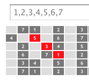
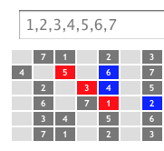

Q: What have we got here?
A: Some blocky looking gutiar fretbaords with numbers on certain frets. Pretend the strings run horizontally through the middle of the blocks. And like a tire on the road, think of the blocks as your finger's contact patch on the fretboard.
Q: OK, that may take a second to get used to. But why 30 frets? Isn't that too many?
A: It's so you can see patterns repeat, and so you can doodle. Pretend these fretboards go on forever to the left and right
Q: Did you say I can doodle?
A: Yes! go ahead and click on a fret right now. I'll get to the numbers in a minute.
Q: It changed color! So does the color picker determine it?
A: That's right. Change the color wheel when you need to mark the frets differently. Use different colors to learn differnet patterns.
Q: And the numbers?
A: The numbers are degrees of the Major Scale, 1-7, with 1 being the root note. You can change the sets of numbers in the text boxes. The fretboard will refresh once you tab out of the box
Q: What's a b3?
A: A flat 3rd, the note between degrees 2 and 3. You could also call it a sharp 2nd, or #2.
Q: So the #5 is a sharp 5? The note between degrees 5 and 6?
A: You got it!
Q: So do you have any suggestions for a first doodle?
A: I do. A great way to build chords is to pick a starting degree, and then play every other degree. For example 1,3,5. Let's find those somewhere on a 1,2,3,4,5,6,7 fretboard and paint them red like so

Q: Got it. Now what?
A: That degree pattern can be walked up the scale to produce the next chord. Find the 2,4,6 to the right of your red 1,3,5 and make 2,4,6 blue like so

Q: OK, I get it. I bet you want me to repeat this again with 3,5,7 and with 4,6,1 and again with 5,7,2 etc until I hit 1,3,5 again?
A: Exactly. Then grab a guitar and start practicing these chords. Use the colors to recognize their shapes. Have you ever played Tetris?
Q: Wait a minute, you're an A: for answer, why are you asking questions? Yes I've played Tetris. Who hasn't?
A: And how many different Tetris shapes are there, 7? Here you've just learned how to play harmonized diatonic chords over the major scale, and you only needed to know 3 shapes.
Q: Yeah I noticed that. 1,3,5 has the same shape as 4,6,1 and 5,7,2. 2,4,6 has the same shape as 3,5,7 and 6,1,3. And then there's that goofy 7,2,4. What is he, the cooties of chords?
A: Easy now. He's actually got a name. His shape is called a diminished triad. The 1,3,5 shape (also 4,6,1 and 5,7,2 shape) is called a major triad. And the 2,4,6 shape (also 3,5,7 and 6,1,3 shape) is called a minor triad.
Q: So, could I use the same formula on other strings making other shapes?
A: Absolutely, the music theory works on all strings and all frets. And don't be afraid to invert 1,3,5 to 3,5,1 or 5,1,3. The inversions will have new shapes and sounds which can also walk up the scale too. If you get tired of triads, try 1,3,5,7 and 2,4,6,1 using 4 notes at a time. It's best to first find a shape you can actually fret with your hand, and then walk that shape up the scale. I hope you're ready to play your own what-ifs with this webpage and your guitar. You may even catch yourself having another alternative to playing Guitar Hero or Rock Band.